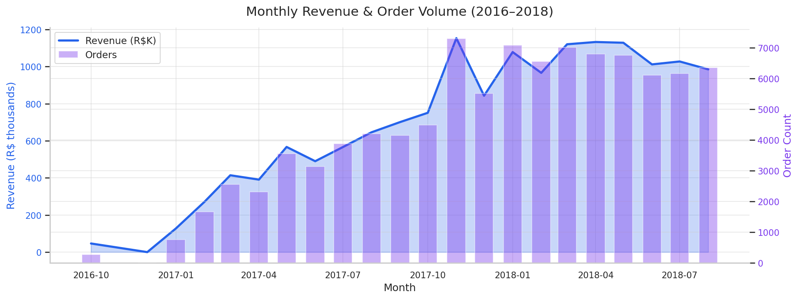
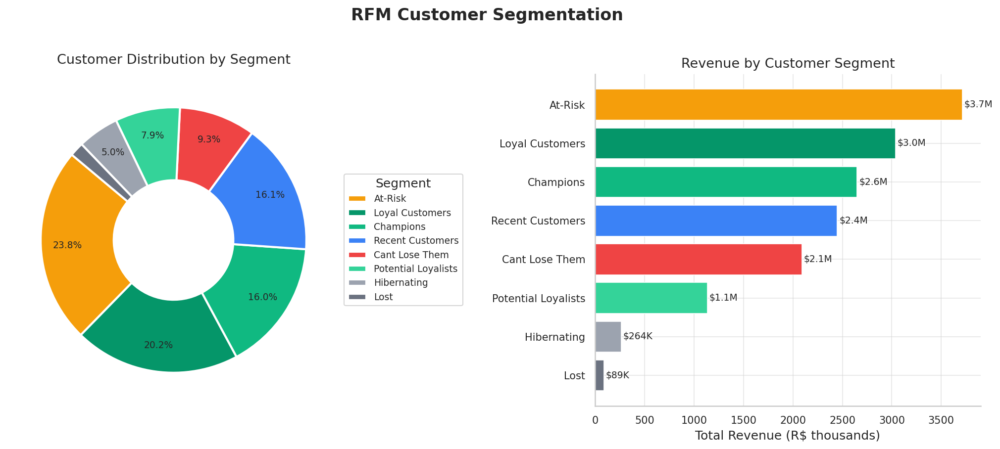
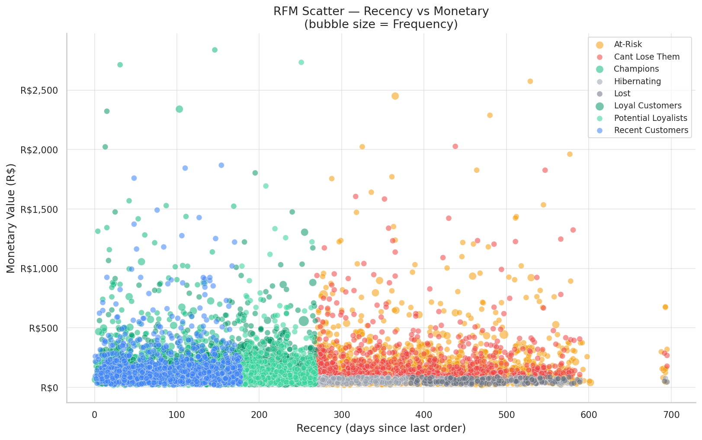
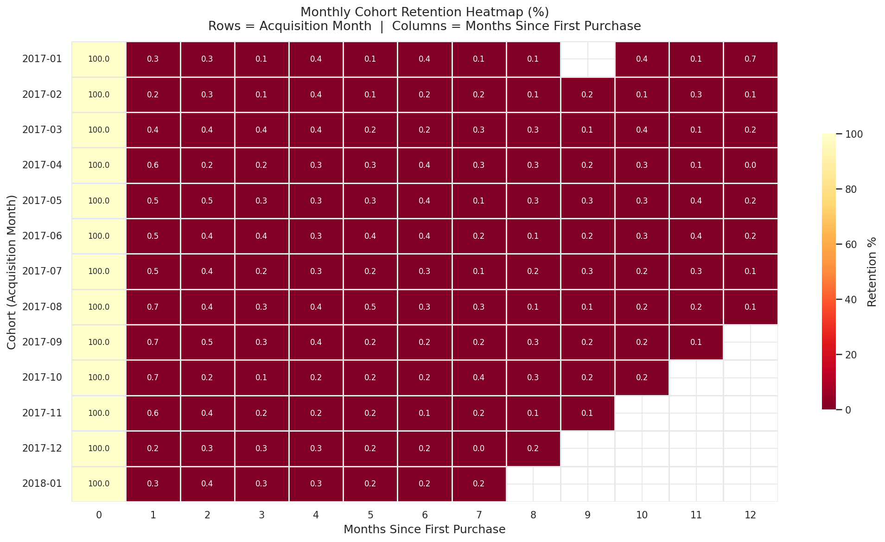
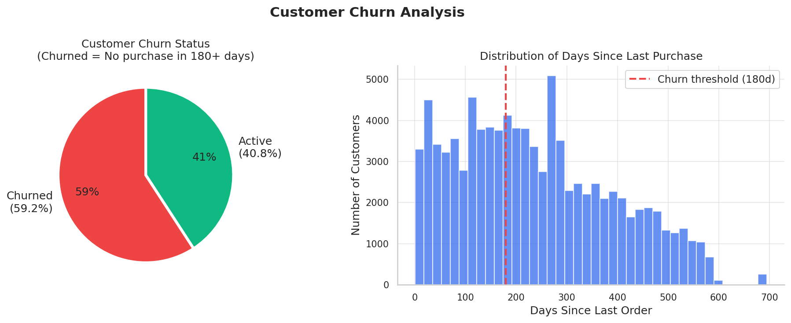
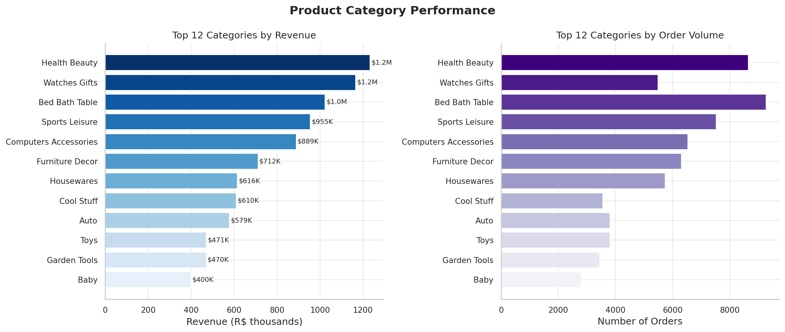
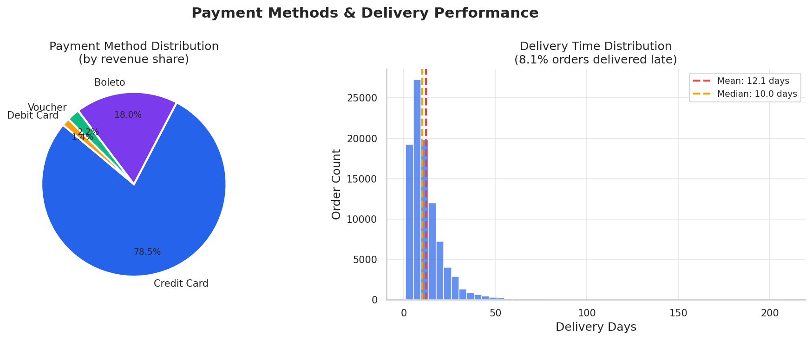
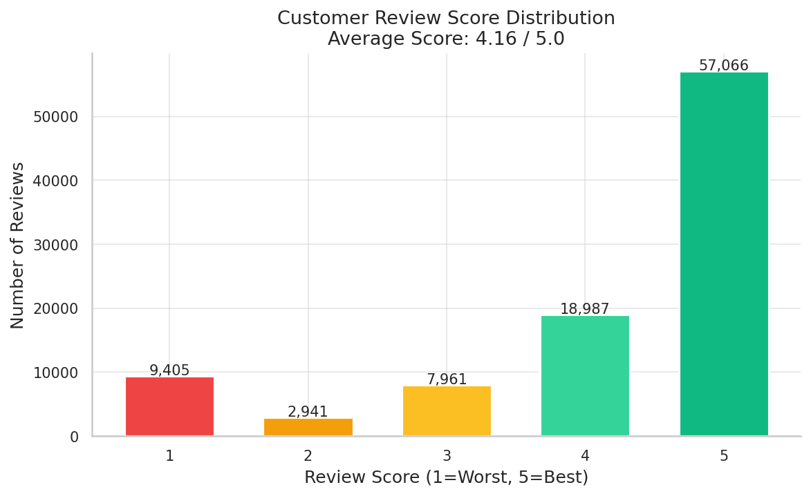

A comprehensive end-to-end analysis of 96,000+ delivered orders from Brazil's largest e-commerce platform — uncovering customer segments, retention patterns, churn drivers, and revenue opportunities.
This analysis examines Olist's customer transaction data across 9 datasets spanning two years of operations. The goal: understand who the customers are, how they behave, and how to grow revenue through data-driven segmentation and retention strategies.
Monthly revenue and order volume show strong growth from late 2016 through mid-2018, with a peak in November 2017 — consistent with Brazil's Black Friday shopping surge.

Revenue grew ~300% from Q4 2016 to peak months in mid-2017, driven by expanding marketplace penetration and seasonal demand.
São Paulo state alone accounts for 42% of all orders and 37% of revenue — geographic concentration creates both opportunity and risk.
November 2017 shows a clear spike aligned with Black Friday promotions, suggesting seasonal campaigns are highly effective on this platform.
Customers are scored on Recency (how recently they purchased), Frequency (how often), and Monetary value (how much they spend). Each dimension is scored 1–5, enabling 8 actionable customer segments.


| Segment | Customers | Avg Recency | Avg Frequency | Avg Spend | Total Revenue |
|---|---|---|---|---|---|
| At-Risk | 22,229 | 395d | 1.05 | R$ 167 | R$ 3,711,784 (24.1%) |
| Loyal Customers | 18,824 | 169d | 1.03 | R$ 161 | R$ 3,036,801 (19.7%) |
| Champions | 14,961 | 90d | 1.09 | R$ 177 | R$ 2,647,445 (17.2%) |
| Recent Customers | 14,984 | 91d | 1.00 | R$ 163 | R$ 2,448,805 (15.9%) |
| Cant Lose Them | 8,671 | 395d | 1.00 | R$ 241 | R$ 2,089,564 (13.5%) |
| Potential Loyalists | 7,373 | 220d | 1.00 | R$ 154 | R$ 1,135,495 (7.4%) |
| Hibernating | 4,710 | 371d | 1.00 | R$ 56 | R$ 263,922 (1.7%) |
| Lost | 1,605 | 474d | 1.00 | R$ 55 | R$ 88,646 (0.6%) |
These ~33,800 customers generate R$ 5.7M (37% of total revenue). Retention spend here has the highest ROI.
22,229 customers (24%) are at risk of churning — representing R$ 3.7M in revenue. Reactivation campaigns are urgently needed.
8,671 high-spend customers are disengaged. These are the most expensive customers to lose — prioritize personal outreach.
Cohort analysis tracks groups of customers acquired in the same month and measures how many return in subsequent months. This reveals the platform's true customer stickiness beyond headline order numbers.

Month-1 retention averages just ~5% across cohorts — meaning 95% of customers do not return the month after their first purchase. This is a structural platform challenge.
After the initial drop-off, a small loyal core (0.3–0.5%) continues to purchase each month — suggesting a genuine repeat buyer segment exists but needs nurturing.
The sharp drop after month 0 signals that a structured post-purchase re-engagement flow (email, loyalty points, discount codes) could meaningfully improve retention and LTV.
A customer is classified as churned if they have not placed an order in the past 180 days. This threshold aligns with the average repurchase window observed in the dataset.

Analyzing which product categories drive the most revenue and order volume reveals where Olist's marketplace has the strongest market fit — and where growth opportunities exist.

R$ 1.23M across 8,647 orders — high average order value and consistent demand make it the platform's revenue leader.
R$ 1.17M from just 5,495 orders — the highest average order value (~R$ 212) of the top categories. Premium positioning drives revenue efficiency.
9,272 orders make it the highest-volume category despite being 3rd in revenue — indicating price-sensitive, frequent buyers worth targeting with loyalty incentives.


78.5% of revenue flows through credit cards, followed by boleto (18%). Debit and vouchers are negligible — BNPL or Pix integration could expand the customer base.
While the median is 10 days, significant right-tail variance indicates logistics inconsistency. A small % of orders take 30+ days, likely driving 1-star reviews.
Average score of 4.16/5 with 59% of reviews at 5 stars. However, 12% of reviews score 1 or 2 — likely tied to late or damaged deliveries.
Revenue is heavily concentrated in Brazil's Southeast region, with São Paulo (SP) alone driving over a third of total platform revenue.
| State | Orders | Revenue |
|---|---|---|
| SP | 40,500 | R$ 5,770,266 |
| RJ | 12,350 | R$ 2,055,690 |
| MG | 11,354 | R$ 1,819,278 |
| RS | 5,345 | R$ 861,802 |
| PR | 4,923 | R$ 781,920 |
| SC | 3,546 | R$ 595,208 |
| BA | 3,256 | R$ 591,271 |
| DF | 2,080 | R$ 346,146 |
| GO | 1,957 | R$ 334,294 |
| ES | 1,995 | R$ 317,683 |
Brazil's three largest states dominate the platform. Marketing investment in Southeast cities yields the fastest returns.
States like AM, PA, and MA are largely absent from top revenue lists — suggesting logistics barriers or low brand awareness. A targeted expansion could unlock significant growth.
Based on the analysis, here are six prioritized recommendations for Olist's growth and retention strategy:
Python 3.11 · Pandas · NumPy · Matplotlib · Seaborn · Scikit-learn · Jupyter Notebooks
Quintile scoring (1–5) on Recency, Frequency, and Monetary dimensions. Snapshot date = max purchase + 1 day. 8-segment rule-based classification.
Acquisition cohort = customer's first purchase month. Cohort index = months elapsed since acquisition. Retention % = returning unique customers / initial cohort size.
96,478 of 99,441 orders (97%) had "delivered" status and were used. Payments were aggregated per order. Missing geolocation data was excluded.
olist-ecommerce-analysis/ ├── data/ │ └── raw/ ← Kaggle CSV files (not committed) ├── src/ │ ├── data_loader.py ← Dataset loading & merging │ ├── rfm.py ← RFM scoring & segmentation │ ├── cohort.py ← Cohort retention analysis │ └── utils.py ← Plotting helpers & formatters ├── notebooks/ │ ├── 01_eda.ipynb ← Exploratory Data Analysis │ ├── 02_rfm_analysis.ipynb ← RFM deep dive │ ├── 03_cohort_analysis.ipynb ← Cohort retention │ └── 04_churn_analysis.ipynb ← Churn modeling ├── outputs/ │ ├── figures/ ← Generated PNG charts │ └── reports/ ← This HTML report ├── run_analysis.py ← Single-command full pipeline ├── requirements.txt └── README.md